Due: Thursday, April 13, 2000.
- 1.
- Let
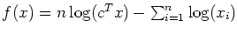.
Show that
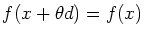
if d=kx for some scalar k,
provided x>0, 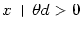,
cTx>0, and
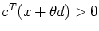.
- 2.
- Let x be a nondegenerate basic feasible solution for the standard
form linear programming problem
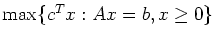.
Let 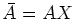,
where X is a diagonal matrix with Xii=xi for
i=1,...,n. Simplify 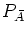,
the projection matrix onto the
nullspace of 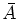.
- 3.
- Starting from equation (1.20) in Wright,
show that there is a typo in equation (1.25a). It should read:
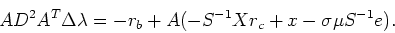
(Note: your version of the text may not contain the typo!)
- 4.
- The Monteiro-Adler short step algorithm presented in class (Algorithm SPF
on page 86 of Wright) could be used as an infeasible interior point
method, starting with x=s=e, y=0, and 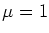.
Give an example to show that in this case we may not be able
to take a step of length 1 and we may need to take a linesearch to
preserve nonnegativity.
(Note: We solve (1.20) to find the directions given in (1.25)
at each iteration. Hint: you only need look at small examples.)
- 5.
- Show that we may not get
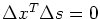
in the setting of
Question 4, even if rc=0.
- 6.
- Consider the primal-dual pair of linear programming problems:
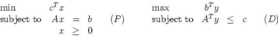
where x and c are n-vectors, b and y are m-vectors,
and A is an m x n matrix.
Let 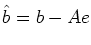
and 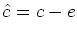,
where e denotes the vector where every component is equal to one.
Let
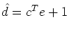.
Now consider the linear programming problem
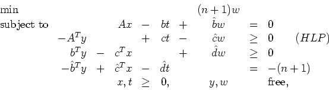
where t and w are scalars.
An interior point method can be used to find a strictly complementary
optimal solution to (HLP).
In such a solution, if the primal variable is equal to zero then
the corresponding dual slack is strictly positive.
Use this result to show that if t=0 in a strictly complementary
optimal solution then either there exists a vector  with Ax=0 and
cTx<0 or there exists a vector y with 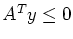
and bTy>0.
with Ax=0 and
cTx<0 or there exists a vector y with 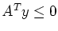
and bTy>0.
John E Mitchell
2000-04-04